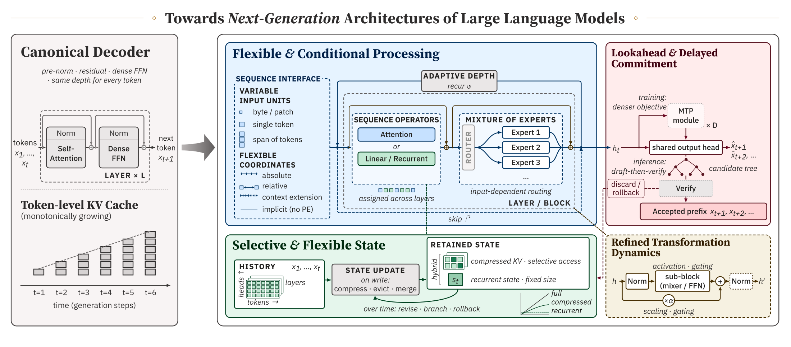
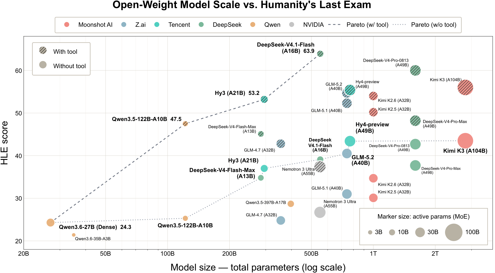
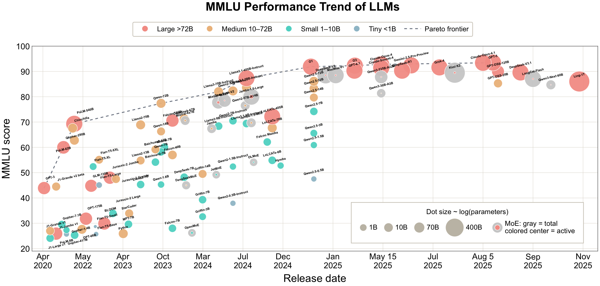
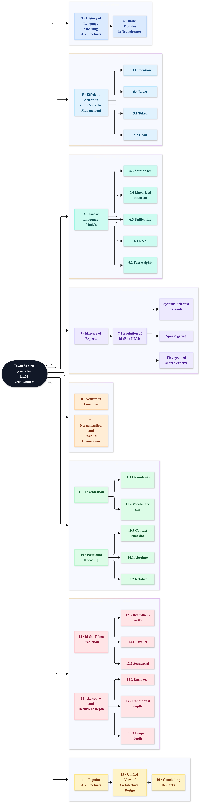

Processing
Flexible and conditional: who runs, and how much work a token receives.
A survey · 2026
What the canonical decoder fixes, and what recent architectures change. A reading of open-weight language models as a design space, not a catalogue of modules.
1The University of Hong Kong · 2Center of Excellence for Generative AI, KAUST · 3Huawei Technologies · 4ByteDance Seed · 5The Chinese University of Hong Kong · 6Peking University · 7Max Planck Institute for Intelligent Systems · 8The Swiss AI Lab, IDSIA-USI/SUPSI
* Corresponding authors. † Equal contribution.
Abstract
Large language models have advanced rapidly through increases in model scale, data, and computation, while their underlying architectures have also undergone substantial evolution. Beyond the canonical Transformer, recent designs seek greater efficiency, scalability, and flexibility by rethinking how sequence information is processed, represented, and transformed.
We survey efficient attention and state management, modern recurrent and other linear-complexity sequence models, Mixture-of-Experts architectures, and advances in activation functions, normalization, residual connections, positional encoding, and tokenization. We also cover multi-token prediction and adaptive and recurrent depth. Across these areas we highlight trade-offs among representational power, optimization stability, and computational cost.
Complementing this component-wise treatment, we take a system-level view. We trace representative open-weight families to identify recurring patterns in how choices are combined, and synthesize those developments along four directions—processing structure, transformation dynamics, state management, and output commitment—asking which assumptions of the canonical decoder each design preserves, refines, or relaxes.
Section 15

Flexible and conditional: who runs, and how much work a token receives.
Selective and flexible: what history is kept, and how that state is updated.
Delayed commitment: predict further ahead, then decide what to keep.
Refined transforms: the nonlinearity and the path across depth.
Section 1
MMLU against release date covers roughly 2021–2025. By 2026 that benchmark was nearing saturation, so the survey turns to Humanity’s Last Exam for the recent open-weight generation.


Section 2
Sections 1 and 2 frame the tree; they are not a third technical family. Color follows the role of each block in the stack. Scroll the figure to read the full taxonomy.

From Shannon’s source to the decoder-only Transformer: attention, feed-forward, position, residual, tokenization, and next-token generation.
Keep quadratic attention; shrink the KV state along token, head, dimension, and layer.
Replace pairwise mixing with a linear-time operator: RNNs, fast weights, state space, linearized attention.
Conditional parameter activation: sparse gating, fine-grained shared experts, systems-oriented variants.
Activation functions, then normalization and residual wiring—the path representations take across depth.
Positional encoding and tokenization: the units and coordinates of the sequence.
Multi-token prediction and adaptive or recurrent depth: how much work a generated token receives.
Released families, a unified design space, and three conclusions about what is still the reference decoder.
Section 15.2
The canonical structure is simple: a fixed tokenization, the same dense blocks, an append-only token-level cache, and one committed next token. The table is the survey’s decomposition of what can change.
| Direction | Dimension | Canonical assumption | Alternative |
|---|---|---|---|
| Flexible and conditional processing | Sequence interface | One fixed tokenization and positional scheme | Finer, multi-scale, or adaptive units |
| Operator assignment | The same sequence mixer in every layer | Different operators across layers or heads | |
| Parameter activation | Every token runs the same dense blocks | Input-dependent routing among experts | |
| Computation allocation | A fixed path and a predetermined amount of work | Early exit, conditional or recurrent depth, drafter–verifier | |
| Refined transformation dynamics | Local nonlinearity | A fixed feed-forward nonlinearity, often SwiGLU | Other gates: squared ReLU, clamped SwiGLU |
| Depth propagation | Fixed residual and normalization pathways | Other placement, residual scaling, or gating | |
| Selective and flexible state | History representation | Individually addressable token states | Selective, compressed, recurrent, or hybrid history |
| State update | Append-only growth | Eviction, merging, compression, branching, or rollback | |
| Lookahead and delayed commitment | Prediction horizon | Next-token supervision only | Multi-step, blockwise, or feature-level prediction |
| Output commitment | One committed token per forward pass | Drafting, parallel verification, delayed commitment |
Section 14.2
A pattern is a combination. The four are not a partition: one backbone can instantiate more than one.
Decoder-only stack, dense feed-forward blocks, fixed depth. Pre-RMSNorm, SwiGLU, and rotary positions became the usual fill of that skeleton. LLaMA is the reference instance.
Expert routing and cache compression spend different budgets. DeepSeek-V2 and V3 pair fine-grained shared experts with multi-head latent attention.
Softmax attention keeps an addressable history; a linear operator compresses it as it is built. Griffin, Jamba, Nemotron, Qwen3-Next, and Kimi Linear interleave the two.
A multi-token objective or module sits on a dense, sparse, or hybrid trunk. DeepSeek-V3, MiMo-7B, LongCat-Flash, and MiMo-V2-Flash are instances.
Section 16
The survey closes on three claims. Most designs still start from the canonical decoder and relax one assumption. The comparisons that matter are the combinations, and those combinations are bounded by systems as much as by modeling.
A dense decoder with a fixed schedule, Pre-RMSNorm, SwiGLU, and rotary positions is still the baseline. Most of the survey changes one of those choices and keeps the rest.
Sparse capacity with a compressed cache, hybrid sequence operators, and a prediction module on top of a trunk show up because the pieces interact. A module list does not capture that.
Load balance, kernels, credit assignment, and caching decide what can actually ship. At least one hybrid family returned to full attention when the infrastructure was immature, then later moved on.
Citation
@article{llmarchsurvey2026,
doi = {10.20944/preprints202610.1532.v1},
url = {https://doi.org/10.20944/preprints202610.1532.v1},
year = 2026,
month = {October},
publisher = {Preprints},
author = {Yao Teng and Guoxuan Chen and Yimeng Chen and Han Shi and Piotr Piękos and Jie Ran and Yutao Zeng and Chuanyang Zheng and Jingyao Li and Li Nanbo and Haoli Bai and Chao Huang and Xihui Liu and Di He and Weiyang Liu and Jürgen Schmidhuber},
title = {Towards Next-Generation Architectures of Large Language Models: A Survey},
journal = {Preprints}
}
Paper on Preprints.org · doi:10.20944/preprints202610.1532.v1 · Literature map on GitHub